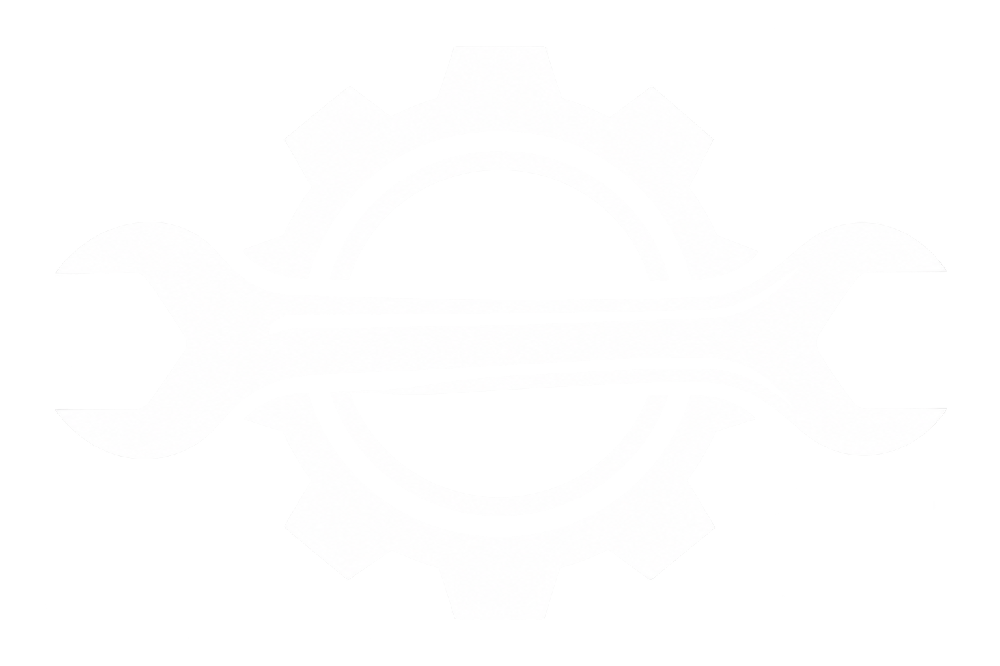

01
Engine Repairs
Tune-ups, diagnostics and engine repair.

YOUSIFMOBILE CAR CLINIC586-224-8159Professional mobile mechanic service delivered to your driveway, workplace, or roadside location across Metro Detroit and surrounding cities.
Skip the tow truck and the waiting room. Yousif Mobile Car Clinic brings dependable automotive service directly to you, with a straightforward process and the convenience of getting your vehicle serviced where it sits.
From routine maintenance to repairs and diagnostics.
Tune-ups, diagnostics and engine repair.

Pads, rotors, calipers and brake service.

Battery testing and replacement.

Shocks, struts and suspension service.

Climate-system diagnosis and repair.

Conventional and synthetic oil service.
Mobile service that meets you where your vehicle is.
Check availability →Call Yousif Mobile Car Clinic to discuss your vehicle and location.
Call 586-224-8159